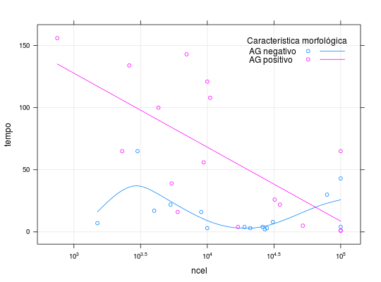

Dados provenientes de um estudo em que pacientes com leucemia foram classificados segundo a ausência ou presença de uma característica morfológica nas células brancas. O objetivo do estudo foi avaliar essa característica morfológica a partir do tempo de sobrevivência dos pacientes.
Um data.frame com 32 observações e 3 variáveis.
ncelcaracAG positivo) ou ausência (AG negativo) da
característica morfológica.tempoPAULA (2004), Exemplo 2.10.19, pág. 180.
Feigl, P., Zelen, M. (1965). Estimation of exponential survival probabilities with concomitant information. Biometrics 21, 826-838.
data(PaulaEx2.10.19)#> Warning: data set ‘PaulaEx2.10.19’ not foundstr(PaulaEx2.10.19)#> 'data.frame': 32 obs. of 3 variables: #> $ ncel : int 2300 750 4300 2600 6000 10500 10000 17000 5400 7000 ... #> $ carac: Factor w/ 2 levels "AG negativo",..: 2 2 2 2 2 2 2 2 2 2 ... #> $ tempo: int 65 156 100 134 16 108 121 4 39 143 ...library(latticeExtra) xyplot(tempo ~ ncel, groups = carac, data = PaulaEx2.10.19, type = c("p", "g", "spline"), scales = list(x = list(log = 10)), xscale.components = xscale.components.logpower, auto.key = list( corner = c(0.95, 0.95), lines = TRUE, cex.title = 1, title = "Característica morfológica"))